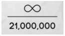

Şimdiye Kadar Yazılmış En Basit Bitcoin Kitabı
BİTCOİN ÖNEMLİ GÜNLER TAKVİMİ
18 Ağustos 2008
~
bitcoin.org
alan adı kaydedildi.
31 Ekim 2008
~
Bitcoin Teknik Dökümanı Günü:
"Bitcoin: Eşler Arası Elektronik Nakit Sistemi" başlıklı Teknik
Dökümanı, Satoshi Nakamoto adında anonim bir kriptograf
tarafından metzdowd.com kriptografi posta listesinde yayınlandı.
3 Ocak 2009
~
Bitcoin'in Doğum Günü:
Satoshi'nin Genesis bloğunu madenciliği ile Bitcoin ağı
başlatıldı.
12 Ocak 2009
~
İlk Bitcoin İşlemi:
Hal Finney'in test gönderimi olarak Satoshi'den 10 bitcoin
almasıyla ilk bitcoin işlemi gerçekleşti.
5 Ekim 2009
~
İlk Bitcoin Borsası:
Coin başına 0,00764 dolarlık liste fiyatıyla ilk bitcoin borsası
olan The New Liberty Standard (NLS) doğdu.
12 Ekim 2009
~ "E-posta yedeklerimden
bilinen ilk bitcoin-USD işlemini
buldum. 12 Ekim 2009'da 5.050 BTC'yi $5,02'ye sattım." - Martti
Malmi, bitcointalk.org kurucusu, ilk borsayı başlatan
NewLibertyStandard'a bitcoin sattı.
22 Mayıs 2010
~
Bitcoin Pizza Günü:
Bitcoin'in bir mal veya hizmet satın almak için kullanıldığı
bilinen ilk olay, Lazslo Hanyecz'in iki Papa John's pizzası için
10.000 bitcoin ödemesiyle oldu!
12 Aralık 2010
~ Satoshi'nin bitcointalk.org forumunda son kez paylaşım yaptığı
tarih.
11 Şubat 2011
~ Bitcoin ilk kez ABD Doları ile parite sağladı.
14 Haziran 2011
~ Wikileaks bitcoin ile bağış kabul etmeye başladı.
3 Mart 2017
~ Bitcoin bir ons altın ile parite sağladı.
21 Ağustos 2021
~ Knut Svanholm'un meme'iyle önerilen, yıllık ilk
Bitcoin Sonsuzluk Günü:
Her şey 21 milyona bölünür.
